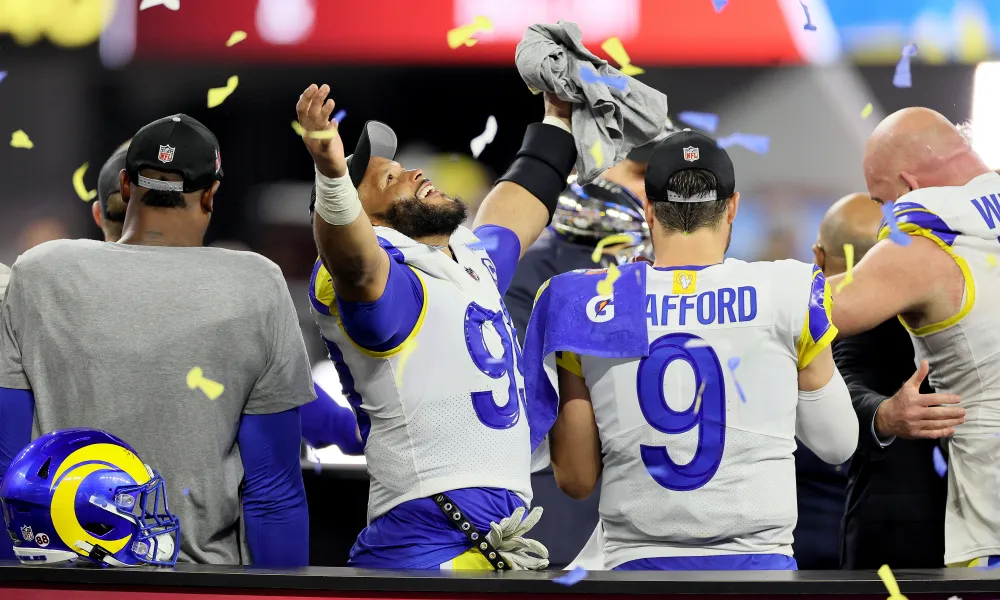

Let's Talk LA Rams

I'm going to breakdown a little bit about my favorite NFL team, the LA Rams. I'll talk about notable current players, notable past players, and some other notable facts about the team.
Notable Active Players:
- Aaron Donald DL Arguably the most famous Rams player of the modern era, Aaron Donald has been one of the most dominant DL in history.
- Cooper Kupp WR Cooper Kupp is considered one of the best receivers in the league with his incredible route running and speed, he was a crucial aspect of the Ram's 2022 Super Bowl win.
- Matthew Stafford QB A 2021 trade brought Matthew Stafford from the Ddetroit Lions to LA and in his first season with the team he helped lead the team to a Superbowl victory.
- Puka Nacua WR Puka is in his first year as a Ram and has taken the league by storm. He has been performing phenominally and has a great background.
- Sean McVay HC Though not a player, I had to include McVay. McVay has been one of the best head coaches of the modern era and is a major factor for the teams success in the past decade.
LA Rams current active roster
Notable Former Players:
- Kurt Warner QB With a great history and great impact on the team, Kurt Warner goes down as the most noatbel QB in Rams history
- Eric Dickerson RB Though his time on the rams was shorter than one would hope, he made his impact known, based purely off of stats Dickerson is easily one of the best players the Rams have had on roster.
- Marshall Faulk RB A key player in the Ram's Super Bowl XXXIV run, Faulk is yet another legendary RB in the Ram's legacy, even more prolific than Dickerson, at least with the Rams.
- Todd Gurley RB Yet another famous RB, Gurley though, is much more recent. One of the most recent super stars for the Rams with the accolades to back it up. However, he only played for 5 seasons before dropping off drastically, he is a bit of a touchy subject for Rams fans.
- Deacon Jones DE An icon in NFL history, Jones essentially created an entire statistic, the sack. He would tackle QBs so often and dominate opposing offenses so intensly that the NFL started to track an entirely new stat. He forever changed the landscape of the sport and for that Jones will always be an icon of the Rams.
100 notable Rams players through out the years
Fun Facts:
- Super Bowls The Rams have made it to the Super Bowl 5 times and have it 2 times, whcih is more wins than over half of the league.
- Bouncing Around The Rams were initially located in Cleveland back in 1945 before relocating to Las Angeles. They would then relocate again in 1995 to St. Louis. But wait, in 2016 they would relocate back to LA where they currently reside.
- Greatest Show on Turf This was a nickname for the high flying offense Rams during the 1999, 2000, and 2001 seasons. Led by Qb Kurt Warner and RB Marshall Faulk, this team set all sorts of offensive records, and made 2 Super Bowls and won 1 of them.
- New Era incoming The team traded away a lot of draft picks and signed a lot of short and expensive contratcs to get their 2022 Super Bowl victory. As a reslut the bill has come due and it appears as though the Rams are going to be in a rebuilding stage very soon. Both Aaron Donald and Matt Stafford have limited playing time left due to their age, and there aren't very many other experienced players on the team. It seems as though the Rams will be entering an all new era in the coming years.
